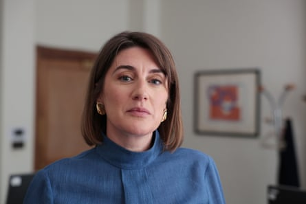

W hen the Conservative peer Gabby Bertin arrived for a meeting with the the science and technology secretary, Peter Kyle , earlier this year she startled him by laying out an array of pornographic images across his desk.
“They were screengrabs showing little girls, their hair in bunches, and massive, grown men grabbing little girls’ throats,” she says. She had selected images which appeared to depict child abuse, and yet were easily and legally available on a popular website.
“Unless you see it, you can’t quite believe how bad it is.” The minister appeared shocked and upset by the images, she recalls, so she quickly tidied them away and later shredded them.
Bertin has noticed that her desire to talk frequently and openly about extreme pornography is not shared by all her Westminster colleagues. “I’ve definitely seen people swerve at lunch, not wanting to sit next to me for fear of what they’re going to hear coming from my mouth,” she told fellow delegates at the launch meeting of her pornography taskforce this week, prompting a flutter of sympathetic laughter.
Since being appointed by the former prime minister Rishi Sunak to lead an independent review into the regulation of online pornography in December 2023, Bertin has observed how a double taboo has made most politicians extremely reluctant to engage. Some simply find the subject hugely embarrassing; others stay silent because they do not wish to appear prudish by criticising the proliferation of extreme and often illegal pornographic material online.
She is frustrated by this reticence. “You can’t leave the pitch on this stuff just because you’re worried about being accused of being too strait-laced,” she says.
The government needs urgently to appoint a minister for porn, she recommends, to ensure that the issue gets the attention it deserves, rather than being passed reluctantly between the Home Office and the Department for Science, Innovation and Technology. A former adviser to David Cameron, Bertin has gathered cross-party support for her work and says she emails Keir Starmer so regularly about the issue that she has “practically become his pen pal” (if you can have a pen pal who delegates to officials the responsibility of replying).
“We’re really British about it so we don’t want to have a graphic conversation about sex and porn,” she says, in an interview in the Westminster office she shares with several other peers. “But you’ve got to shout about it as loudly as possible. The reason why we’ve got into this mess is because nobody has really wanted to talk about it.”
‘Unless you see it, you can’t quite believe how bad it is,’ Bertin says of some porn available online.Photograph: Martin Godwin/The Guardian
By mess she means a situation whereby online pornography (which is viewed by an estimated 13.8 million UK adults every month) is not regulated to the same degree as pornography watched in cinemas or videos, despite the fact that videos have been redundant for decades and vanishingly few people now visit cinemas to watch porn. The absence of scrutiny has created an environment where much of the content created is, she says, “violent, degrading, abusive, and misogynistic”.
She also means a situation where a member of her own party had to resign after twice watching porn (perplexingly tractor-themed ) on his phone, as he whiled away time on the green benches in the House of Commons.
“People have slightly lost the plot on porn. Would someone 20 years ago have just taken Playboy into the Commons, and had it lying on their lap? It just shows what an extraordinary place we’ve got to,” she says. “You can do what you like in your private life – I don’t have a problem with that – but you can’t watch porn in the House of Commons, and you shouldn’t be watching porn at your desk. There’s a place for these things and it’s not in the office.”
Her review , published in February, made 32 recommendations. Last week the first of these became government policy, when officials announced that pornography depicting strangulation would be made illegal. Her new taskforce of 17 people, bringing together representatives from the police, the advertising industry, anti-trafficking organisations and violence against women charities, will focus on how to ensure harmful online content is better regulated, trying to bring parity between the scrutiny of offline and online content.
She pays tribute to the “hugely innovative side” of the porn industry, which has long driven technological advances in webcams and internet speeds, fuelled by the sector’s enormous capacity to turn profit, but she has not invited any representatives on to the taskforce, wary of anything that might let the industry “mark their own homework”.
This week Ofcom announced that major online providers, including the UK’s most popular pornography site, Pornhub, had agreed to implement stronger age-verification measures in compliance with the Online Safety Act, to prevent under-18s from accessing adult material. Those platforms that do not comply with the measures face being fined 10% of global turnover or being blocked in the UK.
Ofcom is also responsible for monitoring whether sites distributing user-generated pornography are protecting UK viewers from encountering illegal material involving child sexual abuse and extreme content (showing rape, bestiality and necrophilia, for example). However, other forms of harmful pornography that are regulated in physical formats are not subject to similar restrictions online.
It is this grey, unscrutinised area that Bertin’s panel will focus on, as well as calling for better processes to respond to stolen content, working out how people depicted in pornographic videos can request that the clips be removed from sites, and how to build safety mechanisms into AI tools that create sexually explicit content.
Officials at the British Board of Film Classification (BBFC) guided her through short clips of extreme material to help her understand the nature of easily available harmful content. She remains disturbed by the material she saw – content designed to appear to be child sexual abuse, set in children’s bedrooms – roles played by young girls, who may be over 18 but are acting as children. “The titles are very problematic, things like: ‘Daddy’s going to come home and give his daughter a good seeing to’ or ‘Oops I’ve gone too far and now she’s dead’ or ‘Kidnap and kill a hooker.’” This content would be prohibited by the BBFC in the offline world, but is unregulated online.
During research for her review, she met representatives from global tech companies, and told them how when Volvo invented the three-point safety belt they gifted the patent to the rest of the industry because staff realised the innovation was so vital to raising safety standards. “My pitch was that they have a duty and responsibility to double down on trying to get technology that can clean up these situations, and they should share that technology,” she says. “Taylor Swift can whip a song off a website as soon as anyone tries to pirate it. There’s no reason why the firms can’t come up with technology to sort this out.”
Posing for photographs, she edges away from a watercolour of Margaret Thatcher hung on the wall by one of her colleagues. “Let’s do it without Thatcher in the background. That’s not my doing by the way – I share the office,” she says semi-apologetically, before rapidly adding: “I mean I love Thatcher, obviously.”
But she may be making an important distinction. In a 1970 Woman’s Hour interview, Thatcher said the rise of pornography was a “frightening” manifestation of a newly permissive society that she believed was undermining family life. Bertin describes herself as a liberal conservative and wants to be clear she is neither anti-porn nor running a moral crusade.
“Consenting adults should be able to do what they want; I have no desire to stop any kind of sexual freedom. But restricting people from seeing a woman being choked, called a whore, and having several men stamp on her – for example – is not ending someone’s sexual freedom. This is the kind of content we want to end.”